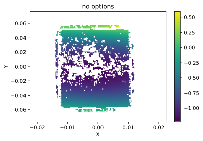
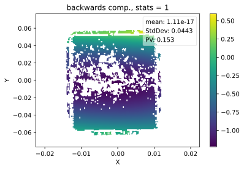
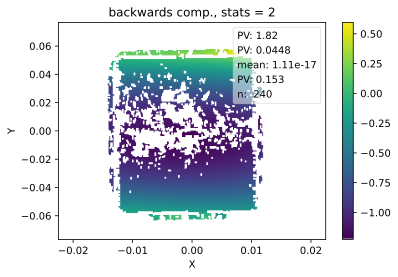
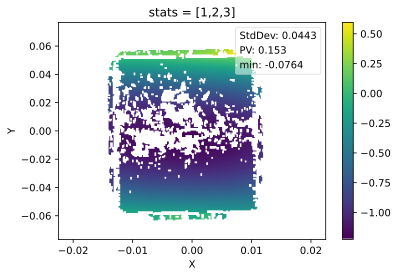
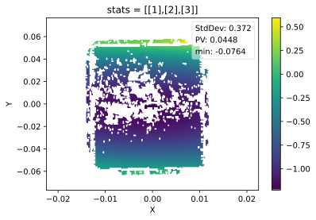
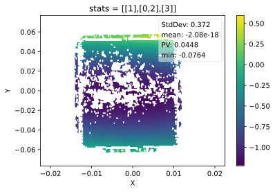

from dataIO.arrays import test_stats, stats
from pySurf.data2D import test_get_stats, get_stats
from pySurf.data2D import test_plot_stats, plot_data, load_test_dataStats labels in plots
Basic
Stats labels can be added to plots and can be customized. Here we describe functions that are involved in the creation and visualization of this label, and the ways to customize it.
The most basic way to control stats properties is setting stats = 1 (basic) or 2 (extended). The default configuration also should give
Custom stats
To go beyond these options, values can be passed to the plot routine to control what to include in legend. Legend is generated in plot_data using the function pySurf.data2D.get_stats. This last returns the legend as a list of strings that the plot routine draws on the plot.
Control of stats in plot function
All functions have test functions that run them with different options. Here is an example of how stats info can be controlled using plot_data arguments:
test_plot_stats runs the data plotting function plot_data with different choices of the parameters stats and fmt, which completely control the behaviour of the legend:
test_plot_stats()





To understand the options that we can pass to plot_data we need to consider how the legend is created. This is obtained as a list of strings (one for each line), created by pySurf.data2D.get_stats(data,x,y, vars=.., fmt=.., ...).
vars allows to chose which statistical result to add to the legend for each varible (it is a 3-element list of lists), fmt and units allows to customize the output. These are derived from function dataIO.arrays.stats (which is indeed applied once for each variable).
See documentation for both functinos in test output.
test_get_stats() Return selected statistics for each of data,x,y as numeric array or string, wrapping `dataIO.stats`.
`vars `, `units` and `string` have same meaning and usage as in wrapped function `stats`. `vars` can be passed as 3-element list to individually set which stats to print (`None` for complete stats, `[]` to exclude all).
If `vars` is passed as a single-level list, this is interpreted as the list of varibles to plot for the data values only (empty lists are returned for x and y).
TODO: span doesn't exclude nan data, put flag to tune this option.
TODO: there is some confusion in creating labels for `plot_data` because it can be unclear which one is X, Y, Z. A label should be added externally or in a routine. Also, statistics cannot be sorted (a list is returned, so it is possible to sort the list).
TODO: make a default extended stats, with span and pts nr. for x and y and mean, span, rms for z.
stats(data, units=None, string=False, fmt=None, vars=None)
Return selected statistics on data as numerical array or list of strings (one for each stats).
vars is a list of indices that select the variables to be included, wrt a list:
0 - mean
1 - stddev
2 - PV
3 - min
4 - max
5 - number of elements
Note that span doesn't exclude nan data, put flag to tune this option.
string if set to True return stats as strings. In this case a string `units` can be used to add a postfix to statistics. A finer control can be obtained by passing in `fmt` a list of format strings for each var.
e.g.: the default is obtained with:
fmt = ['mean: %.3g'+units,
'StdDev: %.3g'+units,
'PV: %.3g'+units,
'min: %.3g'+units,
'max: %.3g'+units,
'n: %i']
no options:
[[], [], [1.1102230246251566e-17, 0.04429278408975292, 0.15279672, -0.07639836, 0.07639836, 240]]
-------------
no options, string:
[[], [], ['mean: 1.11e-17 ', 'StdDev: 0.0443 ', 'PV: 0.153 ', 'min: -0.0764 ', 'max: 0.0764 ', 'n: 240']]
-------------
vars=[1,2,3], string:
[[], [], ['StdDev: 0.0443 ', 'PV: 0.153 ', 'min: -0.0764 ']]
-------------
vars=[3], string:
[[], [], ['min: -0.0764 ']]
-------------
vars=[[],[2],[3]], string:
[[], ['PV: 0.0448 '], ['min: -0.0764 ']]
-------------
vars=[[1],[2],[3]]:
[['StdDev: 0.372 '], ['PV: 0.0448 '], ['min: -0.0764 ']]
-------------
units='mm':
[['StdDev: 0.372 mm'], ['PV: 0.0448 '], ['min: -0.0764 ']]
-------------
units='[mm]':
[['StdDev: 0.372 mm'], ['PV: 0.0448 '], ['min: -0.0764 ']]
-------------
units=['mm','mm','mm']:
[['StdDev: 0.372 mm'], ['PV: 0.0448 mm'], ['min: -0.0764 mm']]
-------------
vars=[[1],[2,3],[3]]:
[['StdDev: 0.372 mm'], ['PV: 0.0448 mm', 'min: -0.0224 mm'], ['min: -0.0764 mm']]
-------------
vars=[[2,3],[],[3]]:
[['PV: 1.82 mm', 'min: -1.23 mm'], [], ['min: -0.0764 mm']]
-------------
A similar test shows how same logic is implemented in dataIO.arrays.stats:
test_stats()no options: all stats as float: [0.5005961637052837, 0.28831761641970005, 0.9960826445285902, 0.002751698459795393, 0.9988343429883856, 1000]
----------
with empty vars, return empty: []
----------
select two stats [0.5005961637052837, 0.28831761641970005]
----------
return as string, include units: ['mean: 0.501 km', 'StdDev: 0.288 km']
----------
return string, with format ['media: 0.500596 A', 'scarto: 000 mm']
----------
[0.5005961637052837,
0.28831761641970005,
0.9960826445285902,
0.002751698459795393,
0.9988343429883856,
1000]Possible improvements
The behavior of stats labels is not completely customizeable.
To invert the order of variables, get_stats must be called with the correct parameters, and strings rearranged before manually generating a new legend.
X, Y, Z variables can get confused. An axis label can be added only with some similar manipulation of the legend.
See TODO: in code.